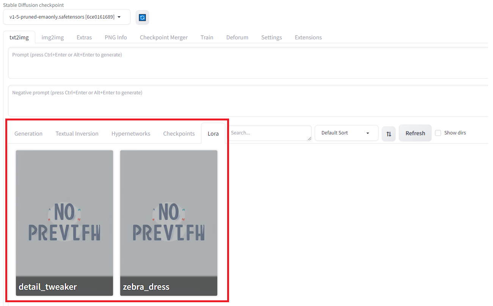
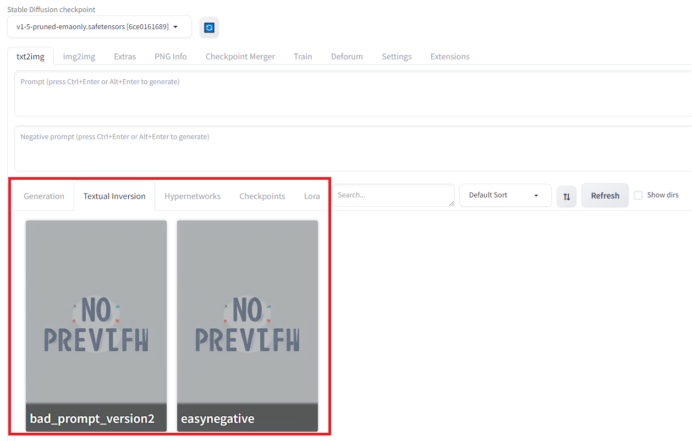
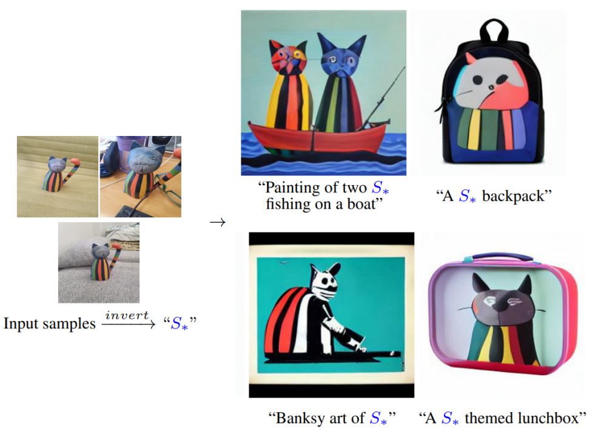
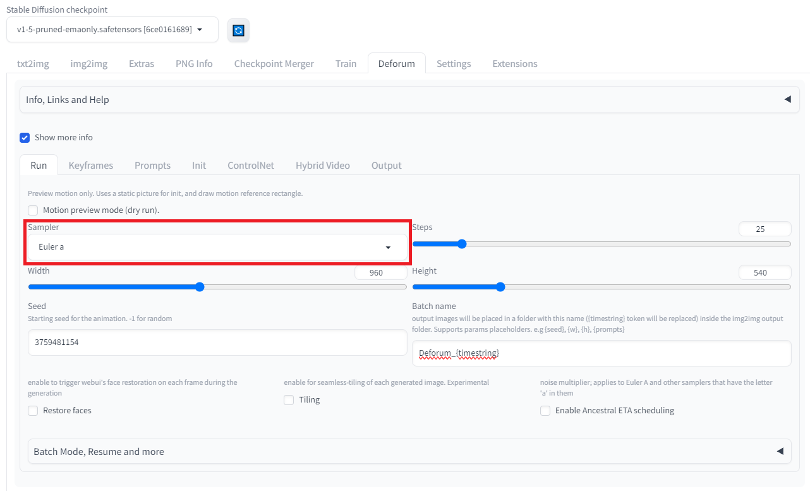
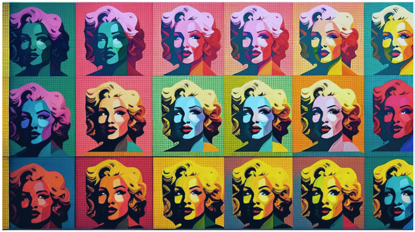

Stable Diffusion 세팅#
Checkpoint#
Web UI Screenshot

설명#
특정 스타일의 이미지를 생성하기 위한 pre-trained Stable Diffusion weights
적용 방법 :
stable-diffusion-webui/models/Stable-diffusion폴더에 원하는 모델의.safetensors파일을 저장
예시#
v1-5-pruned-emaonly |
stable-diffusion-xl-refiner-1.0 |
dreamshaper_8 |
|---|---|---|
|
|
|


Prompt : a man standing on the beach looking at the sea
팁#
webui 기본 checkpoint인
v1-5-pruned-emaonly.safetensors로 영상을 생성할 경우 영상 퀄리티가 좋지 않음전시회 작품은 SDXL, Dreamshaper을 주로 사용함
LoRA#
Web UI Screenshot

설명#
기존 pre-trained weight는 고정하고, 몇 개의 dense layer만 rank decomposition matrices를 최적화하는 방식으로 학습시키는 모델
Custom 이미지를 받아 학습시킬 수 있어, concept을 유지한 채 이미지를 생성할 수 있음

적용 방법 :
stable-diffusion-webui/models/Lora폴더에 원하는 모델의.safetensors파일을 저장Prompts를 적을 때
<lora:filename:multiplier>형식으로 입력하고 trigger words가 있는 경우 함께 입력함예시 :
{"0": " a peaceful town, <lora:PixelArtRedmond-Lite64:0.8>, Pixel Art "}
예시#
default |
PixelArtRedmond LoRA |
|---|---|
|
|


Prompt : snow is falling in magical candy land, pixel art
팁#
예시와 같이 Pixel 그림체, 만화 그림체 등 원하는 스타일을 작품에 적용할 수 있음
코드#
💻 Link to Code
만화 스타일에 맞는 그림을 그릴 수 있는 LoRA 학습 코드
Hypernetwork#
Web UI Screenshot

설명#
모델의 cross-attention 레이어 중간에 들어감으로써 작은 네트워크의 weight로 큰 네트워크의 weight 조절을 이끌어내는 fine-tuning 기법
checkpoint 학습에 비해 파일 크기가 작고 훈련 속도가 빠르지만 LoRA 보다는 효과가 떨어짐

적용 방법 :
stable-diffusion-webui/models/hypernetworks폴더에 원하는 모델의.pt파일을 저장Prompts를 적을 때
<hypernet:filename:multiplier>형식으로 입력함예시 :
{"0": "a portrait of woman with blond hair, <hyperenet:mjv4_hypernet:1>"}
예시#
default |
MJV4 hypernetwork |
|---|---|
|
|


Prompt : a woman with blond hair, octane render, highly detailed
Textual Inversion (Embedding)#
Web UI Screenshot

설명#
텍스트 인코더(text encoder)에 새로운 임베딩(단어)을 생성하여 개인 사물이나 예술적 스타일과 같은 특정 개념을 생성하는 방법
모델을 직접 조정하는 것이 아니므로, LoRA나 Hypernetwork보다는 효과가 작음 
적용 방법 :
stable-diffusion-webui/embeddings폴더에 원하는 모델의.pt파일을 저장Prompts에 학습에 사용한 단어를 입력함
Negatvie prompt의 경우 Prompts negative에
(filename:multiplier)형식으로 입력함예시 :
(easynegative:0.75)
예시#
default |
easynegative embedding |
|---|---|
|
|


Prompt : a woman shaking her two hands, octane render, highly detailed
Sampler#
Web UI Screenshot

설명#
Diffusion 과정의 각 단계에서 새로운 샘플 이미지를 생성할 때 노이즈를 제거하는 방법
예시#
Euler a |
LMS |
DPM++ 2M Karras |
|---|---|---|
|
|
|


Prompt : the old japanese street side on an avenue with trees, in the style of concept art, lively tavern scenes, muted palette, bloomcore, cherry blossoms, anime-inspired, religious building
팁#
Prompt 별로 잘 그려내는 sampler가 다름
모든 Prompt에서 노이즈처럼 그려내는 sampler들도 있음
LMS, DPM++ 2M SDE, DPM++ 2M SDE Heun, PLMS
Euler, Euler a가 눈에 보기에 가장 자연스럽고, Kaiber 영상과 가장 유사함
전시회 작품은 Euler a를 사용함
Steps#
Web UI Screenshot

설명#
Diffusion 과정의 한 단계에서 주어진 프롬프트 도달까지 반복하는 샘플링 횟수
값이 크면 생성이 오래 걸리는 대신 그만큼 생성되는 이미지의 퀄리티가 올라감
값이 작으면 생성이 빠른 대신 이미지의 퀄리티가 떨어짐
값이 어느 정도 이상보다 더 커지면 더 이상 이미지의 퀄리티가 증가하지 않음
예시#
step = 10 |
step = 20 |
step = 30 |
|---|---|---|
|
|
|


{kind=link}
Prompt : a light bulb is put on a table near a gray wall, in the style of light cyan and gold, use of screen tones, youthful energy, iso 200, organic material, clean-lined, award-winning
팁#
Sampler의 종류에 따라 필요한 steps 수가 달라짐
평균적으로 25이상이면 이미지 퀄리티가 크게 달라지지 않음
전시회 작품은 주로 25을 사용함
Seed#
Web UI Screenshot

설명#
생성 과정에 걸쳐 이미지를 일관되게 유지할 수 있는 기능(숫자)
다른 사용자가 영상을 생성하더라도 seed를 비롯한 타 조건이 동일하면 동일한 결과물 생성이 가능함
Behavior 예시 :
Iter = incremental change (ex 77, 78, 79 ,80, 81, 82, 83…)
Fixed = no change in seed (ex 33, 33, 33, 33, 33, 33…)
Random = randomized seed (ex 472, 12, 927812, 8001, 724…)
팁#
Seed behavior 중에서 fixed를 사용할 경우 시드가 동일해지면서 노이즈 제거가 발생하지 않아 시간이 지나면서 이미지가 노이지로 뒤덮이게 되거나 이미지가 flat하게 보이는 등의 문제가 발생하므로 피하는 것이 좋음